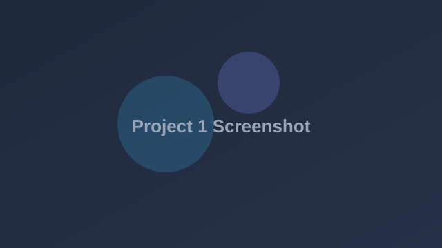
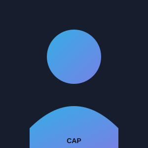
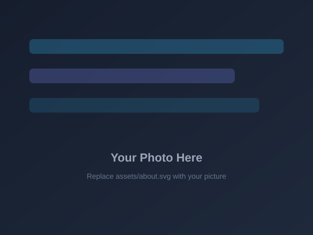
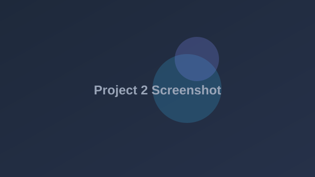
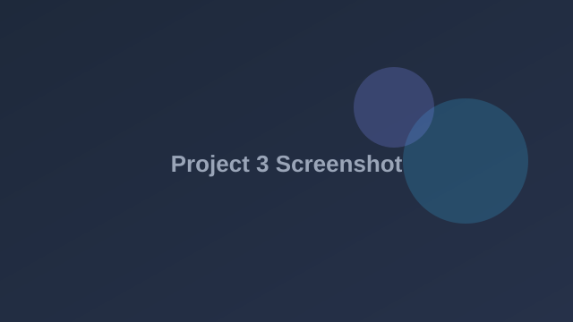

Project Title One
Short description of the project — what it does, the problem it solves, and the technologies used. Replace this with your actual project details.
View Project →
4th Year BS Information Technology Student · Aspiring IT Professional
A quick look at who I am and what I do.

I am a fourth-year Bachelor of Science in Information Technology student with a strong interest in software development, emerging technologies, and intelligent systems. This ePortfolio serves as a workspace and record of my academic learning — a place where I collect and document my projects, submissions, and other work products throughout my studies.
Technologies and competencies I have developed throughout my studies.
Selected academic and personal projects.

Short description of the project — what it does, the problem it solves, and the technologies used. Replace this with your actual project details.
View Project →
Short description of the project — what it does, the problem it solves, and the technologies used. Replace this with your actual project details.
View Project →
Short description of the project — what it does, the problem it solves, and the technologies used. Replace this with your actual project details.
View Project →ITC-C508 · Exercise #WW-P1 · Reflections based on the required readings.
One specific business problem that deep learning can address is customer churn in the telecommunications industry. Churn happens when subscribers cancel their plans or transfer to competitors. Its impact is significant: acquiring a new customer costs far more than retaining an existing one, and even a small monthly churn rate compounds into major revenue loss, reduced market share, and higher marketing spending over a year.
Deep learning can be applied by training a neural network on historical customer data — call and data usage patterns, billing history, service complaints, contract type, and customer service interactions — to predict which subscribers are most likely to leave in the coming months. Unlike simpler models, deep neural networks can capture complex, non-linear relationships across these features, such as how a recent billing dispute combined with declining usage signals a much higher risk than either factor alone. The company can then act early with targeted retention offers instead of expensive blanket promotions.
The main challenge is the "black box" problem — deep models make accurate predictions but do not naturally explain them, which makes managers hesitant to trust or act on the results. This can be addressed through explainable AI (XAI) strategies: using post-hoc explanation tools such as SHAP and LIME to show which factors drove each individual prediction; presenting feature-importance summaries so decision-makers can validate that the model relies on sensible signals; testing the model against known cases before deployment; and keeping a human in the loop for high-stakes retention decisions. These practices improve the transparency, interpretability, and overall trustworthiness of the model, turning it from a black box into a decision-support tool the business can confidently rely on.
Modern organizations are moving far beyond scripted, rule-based chatbots. Using advanced Natural Language Processing models — particularly transformer-based large language models — they now build conversational systems that understand context, remember the flow of a conversation, and respond in natural, human-like language.
What makes these systems intelligent and context-aware is their ability to dynamically adapt to the user in real time. They can detect a user's tone and sentiment and adjust their responses accordingly — becoming more empathetic with a frustrated customer or more direct with an expert user. They can match different communication styles, simplifying technical explanations for beginners while giving precise, detailed answers to advanced users. In education and training, they adapt to learning needs by rephrasing explanations, giving examples, or adjusting difficulty based on how the learner responds.
Organizations apply these capabilities in customer support assistants that resolve issues across multiple turns of conversation, virtual agents that handle bookings and transactions, intelligent tutoring systems that personalize lessons, and internal copilots that help employees find information. Techniques such as fine-tuning on company data, retrieval-augmented generation (RAG) for grounding answers in accurate, up-to-date knowledge, and user profiling allow these systems to stay relevant, personalized, and trustworthy. The result is a shift from static question-and-answer bots to adaptive conversational partners that improve customer experience while reducing operational costs.
Based on the insights I gained from the required readings, I expect ITC-C508 to deepen my understanding of how intelligent systems — particularly deep learning and modern NLP — are designed, trained, and applied to real business problems. I hope to learn the practical side of building predictive models: preparing data, selecting architectures, evaluating performance, and most importantly, applying explainability techniques like SHAP and LIME so that models are not just accurate but also transparent and trustworthy.
I am also excited to explore transformer-based language models and the tools used to build context-aware conversational systems, such as fine-tuning and retrieval-augmented generation. As a fourth-year BSIT student, mastering these knowledge areas, skills, and technologies will directly support my academic goals — especially my capstone work — and strengthen my readiness for a career in the IT industry, where AI-driven solutions are increasingly at the center of how organizations operate and compete. I see this course as an important step toward becoming a well-rounded IT professional who can build intelligent systems responsibly.
Feel free to reach out for collaboration or inquiries.